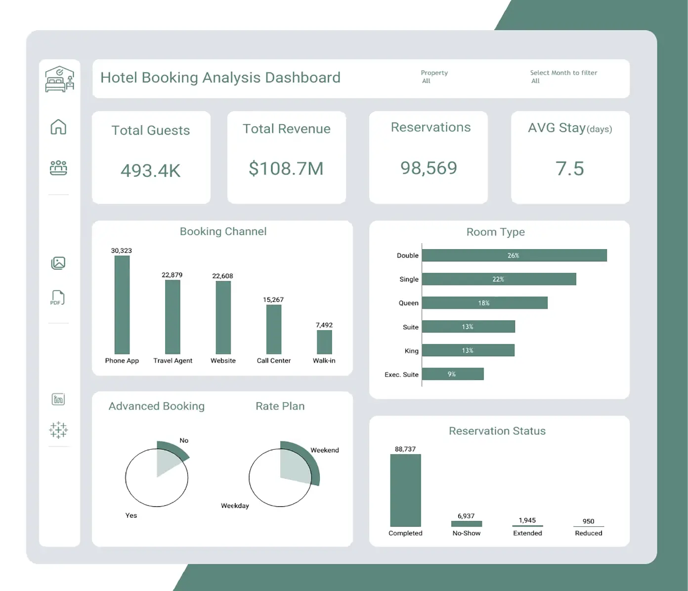
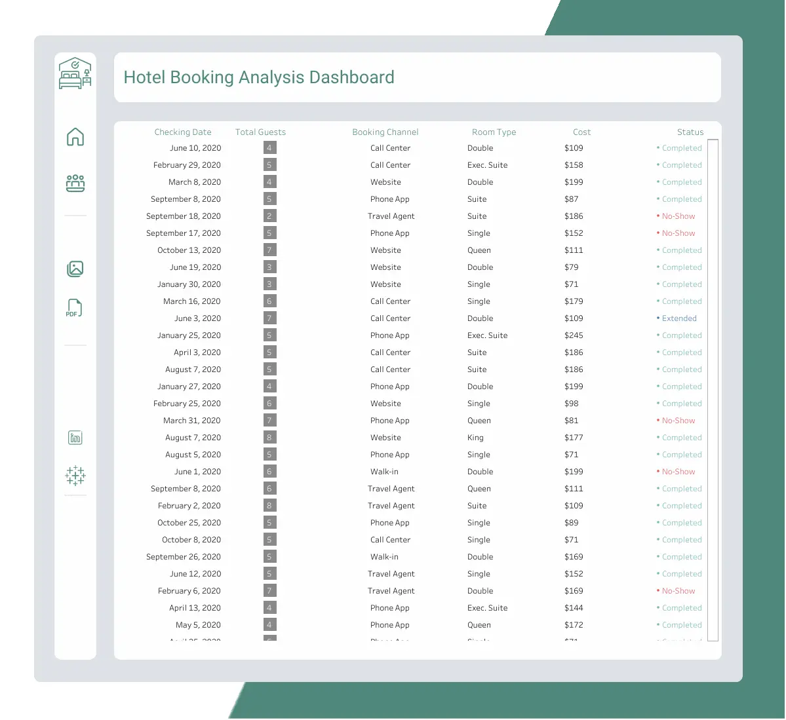

Check project on
-The Hotel Booking Analysis report is a visual representation of hotel booking data. - On Top there’s a quick overview of the total number of Bookings, Total Revenue generated, Reservation Status, Number of Guests and their average stay Period.
-Then the Booking Channels section provides information on the number of bookings by booking channel, which can help hotel managers determine the effectiveness of their marketing strategies and adjust their focus accordingly.
-The Guest Preferences section provides information on the percentage of bookings by room type, such as single, double, Queen, Suite, etc. This information can help hotel managers identify their target audience and tailor their marketing efforts accordingly.
I prefer this project to be called a report more than interactive dashboard but you can filter the data to choose the month you need or If you want to compare properties using the two drop down lists on Top of the Dashboard “The Default Numbers shown represents all Properties and all months.”
The hotel transactional page is designed for managing and your reservations effectively. It allows you to have a detailed view of the reservations, and make informed decisions to optimize the hotel's operations. And It contains:
1.
Total Guests: It includes both adults
and children to give you an idea of the occupancy level for each
booking.
2. Booking Channel: This column
specifies the channel through which the reservation was made.
3. Room Type: This column
provides information about the type of room booked for each
reservation. It may include options such as standard rooms, deluxe
rooms, suites.
4. Cost: The cost column indicates the
price associated with each reservation. It includes the total amount
the guest is expected to pay for their stay, including any
additional charges or fees.
5. Status: This column displays the
current status of the reservation. It helps you track whether a
reservation has been completed, marked as a no-show, extended, or
reduced. This information allows you to manage inventory and make
informed decisions regarding room availability.
Please note that this report aims to provide an overview of the reservation details. For more detailed information or specific analytics, further analysis can be conducted based on the data collected in the dashboard.
